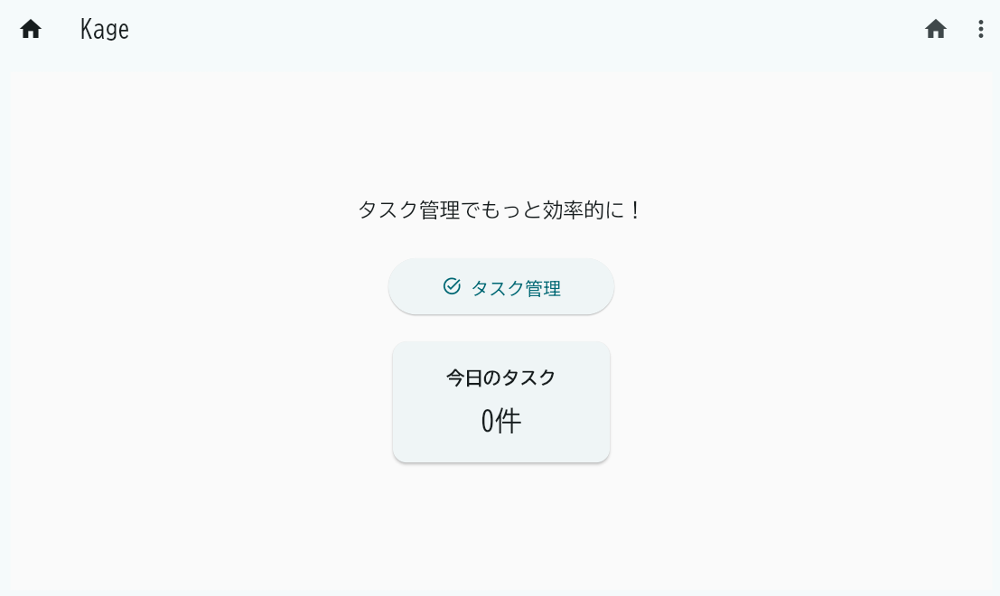
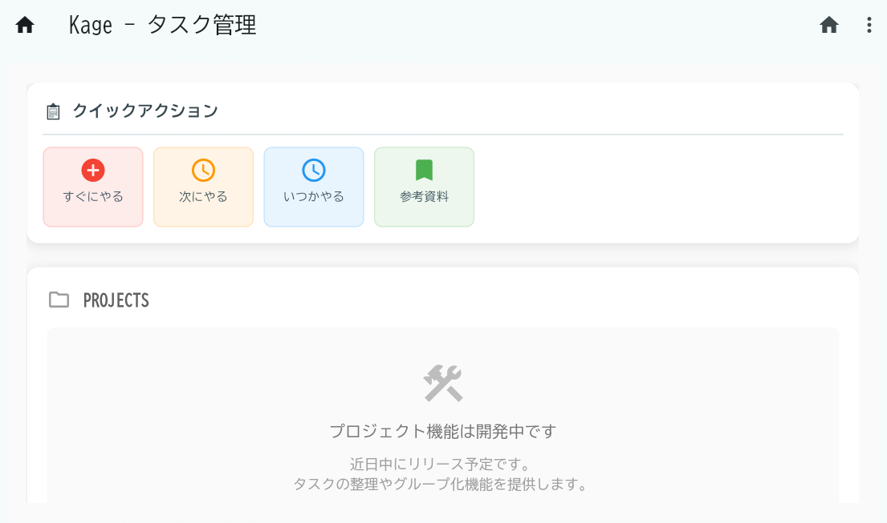
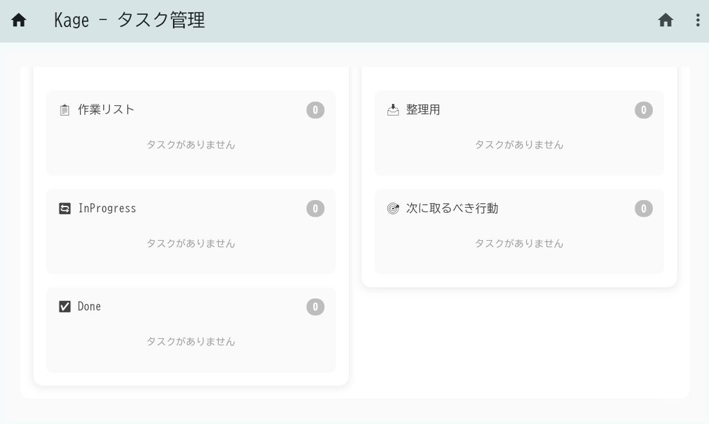
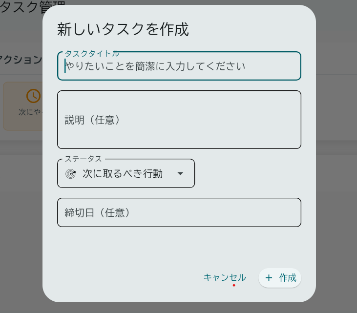

UI ガイド - Kage¶
はじめに¶
Kage は、GTD（Getting Things Done）メソッドを活用したタスク管理アプリケーションです。 このドキュメントでは、現在のユーザーインターフェース（UI）について、画面構成と機能を詳しく説明します。
アプリケーション全体の構成¶
基本レイアウト¶
Kage アプリケーションは以下の基本構成になっています：
- アプリケーションバー（ヘッダー）: すべての画面に共通
- メインコンテンツエリア: 各画面固有の内容
- ナビゲーション: アプリケーションバーのボタンとメニューによる画面遷移
カラーテーマ¶
- ベースカラー: グレー系（Grey 700）
- 背景色: ライトモード基調
- アクセントカラー: 各機能に応じた色分け
- 緊急タスク: 赤 (Red 500)
- 次のアクション: オレンジ (Orange 500)
- いつかやる: 青 (Blue 500)
- 参考資料: 緑 (Green 500)
1. ホーム画面（メイン画面）¶
画面概要¶
ホーム画面は、Kage アプリケーションの起点となる画面です。 ユーザーがアプリケーションを起動すると最初に表示されます。
アクセス方法:
- アプリケーション起動時の初期画面
- アプリケーションバーの「ホーム」ボタンをクリック
- URL:
/
画面構成¶
 ホーム画面：ウェルカムメッセージ、タスク管理ボタン、今日のタスク統計が表示される
アプリケーションバー¶
- タイトル: "Kage"
- ホームボタン: 現在の画面（ホーム）に戻る
- メニューボタン: ドロップダウンメニューでタスク画面への遷移
メインコンテンツ¶
-
ウェルカムメッセージ
-
テキスト: "タスク管理でもっと効率的に！"
- 中央揃え、グレー系のテキストカラー
-
フォントサイズ: 18px
-
メインアクションボタン
-
タスク管理ボタン
- ラベル: "タスク管理"
- アイコン: タスクアイコン（task_alt）
- サイズ: 幅 200px、高さ 50px
- フォントサイズ: 16px
- 機能: タスク管理画面（
/task）への遷移
-
統計情報カード
- 今日のタスクカード
- タイトル: "今日のタスク"
- 件数表示: "X 件" 形式
- カードデザイン: 影付き、角丸
- 幅: 200px
操作方法¶
- タスク管理ボタン: クリックでタスク管理画面に遷移
- アプリケーションバーのメニュー: タスク管理画面への別の遷移方法
2. タスク管理画面¶
画面概要¶
タスク管理画面は、GTD メソッドに基づいたタスク管理の中核機能を提供します。 3 つのセクション（クイックアクション、プロジェクト、タスクボード）で構成された縦型レイアウトです。
アクセス方法:
- ホーム画面の「タスク管理」ボタン
- アプリケーションバーのメニューから選択
- URL:
/task
画面構成¶
  タスク管理画面：クイックアクション、プロジェクトプレースホルダー、タスクボードの 3 セクション構成
アプリケーションバー¶
- タイトル: "Kage - タスク管理"
- ホームボタン: ホーム画面（
/）への遷移 - メニューボタン: ナビゲーションオプション
セクション 1: クイックアクション（QUICK-ACTION）¶
GTD の「2 分ルール」と「タスクの性質分類」を支援するクイックアクションボタンが水平に配置されています。
クイックアクション：GTD メソッドに基づく 4 つのアクションボタン（すぐにやる、次にやる、いつかやる、参考資料）
ボタン構成:
-
すぐにやる (DO_NOW)
-
アイコン: 追加アイコン（add_circle）
- カラー: 赤（Red 500）
-
機能: 緊急・重要なタスクの作成
-
次にやる (DO_NEXT)
-
アイコン: スケジュールアイコン（schedule）
- カラー: オレンジ（Orange 500）
-
機能: Next Action として優先的に実行するタスクの作成
-
いつかやる (DO_SOMEDAY)
-
アイコン: 時計アイコン（access_time）
- カラー: 青（Blue 500）
-
機能: Someday/Maybe リストのタスク作成
-
参考資料 (REFERENCE)
- アイコン: ブックマークアイコン（bookmark）
- カラー: 緑（Green 500）
- 機能: 参考資料・情報として保存するアイテムの作成
デザイン特徴:
- 白背景のコンテナ
- 角丸（12px）
- 影効果（BoxShadow）
- 内側パディング: 16px
セクション 2: プロジェクト（PROJECTS）¶
現在開発中の機能で、将来的にプロジェクト管理機能を提供予定です。
プロジェクトセクション：開発中機能のプレースホルダー表示
現在の表示内容:
- ヘッダー: "PROJECTS" + フォルダアイコン
- プレースホルダーメッセージ:
- 建設アイコン（construction）
- "プロジェクト機能は開発中です"
- "近日中にリリース予定です。タスクの整理やグループ化機能を提供します。"
デザイン特徴:
- グレー背景のプレースホルダーエリア
- 中央寄せレイアウト
- 角丸、影効果
セクション 3: タスクボード（TASKS）¶
GTD のタスクステータスに基づいた 2 カラムのタスクボードです。
タスクボード：CLOSED（完了済み）と INBOX（未処理）の 2 カラム構成でタスクを管理
レイアウト構成:
- 左カラム: CLOSED（完了済みタスク）
- 右カラム: INBOX（未処理タスク）
タスクカードの機能:
- 表示項目: タスクタイトル、説明、ステータス、作成日時
- 操作: クリックで編集、ステータス変更、削除
- 色分け: ステータスによる視覚的分類
サポートするタスクステータス:
INBOX: オレンジ - 未処理・要分類NEXT_ACTION: 緑 - 次にやるべきアクションWAITING: 黄 - 他者の回答待ちSCHEDULED: 青 - 日時指定SOMEDAY_MAYBE: 紫 - いつかやるかもDONE: グレー - 完了済み
操作方法¶
タスクの作成¶
- クイックアクションボタンをクリック
- タスク作成ダイアログが表示
- タイトル、説明などを入力
- 保存でタスクが作成され、適切なステータスで分類
タスクの編集・管理¶
- タスクボード内のタスクカードをクリック
- タスク編集ダイアログが表示
- 情報の編集、ステータス変更、削除が可能
ナビゲーション¶
- アプリケーションバーのホームボタンでホーム画面に戻る
- メニューからその他の機能にアクセス（今後追加予定）
3. ダイアログとポップアップ¶
タスク作成・編集ダイアログ¶
タスクの作成や編集を行うためのモーダルダイアログです。
 タスク作成・編集ダイアログ：タイトル、説明、ステータス選択、作成日時表示と操作ボタン
入力フィールド:
- タスクタイトル: 必須、最大 100 文字
- 説明: 任意、複数行対応
- ステータス: ドロップダウンで選択
- 作成日時: 自動設定
ボタン:
- 保存: タスクの作成・更新
- キャンセル: ダイアログを閉じる
- 削除: 編集時のみ表示
削除確認ダイアログ¶
タスク削除時の確認ダイアログです。
表示内容:
- タイトル: "タスク削除の確認"
- メッセージ: "「[タスク名]」を削除しますか？この操作は元に戻せません。"
- ボタン: "削除"（確認）、"キャンセル"
4. エラーハンドリングとフィードバック¶
エラー表示¶
アプリケーション内でエラーが発生した場合の表示方法：
- エラーメッセージ: スナックバーまたはアラートダイアログ
- 成功メッセージ: 緑色のスナックバー
- 警告メッセージ: 黄色のスナックバー
ローディング状態¶
データの読み込み中やアクション実行中の表示：
- プログレスインジケーター: 処理中の視覚的フィードバック
- ボタンの無効化: 重複実行の防止
5. レスポンシブデザインと操作性¶
ウィンドウサイズ対応¶
- 最小ウィンドウサイズ: デスクトップアプリケーションとして適切なサイズ
- スクロール対応: コンテンツが画面をはみ出す場合の自動スクロール
- レイアウト調整: 縦方向の伸縮に対応
キーボード操作¶
現在の実装では主にマウス操作中心ですが、将来的にキーボードショートカットの追加を予定：
- Enter: ダイアログの確定
- Escape: ダイアログのキャンセル
- ショートカットキー: タスク作成、画面遷移など（今後追加予定）
6. 今後の改善予定¶
近日中の追加機能¶
-
プロジェクト管理機能
-
タスクのグループ化
- プロジェクト階層表示
-
プロジェクトベースのフィルタリング
-
検索・フィルタリング機能
-
タスクタイトル・説明での検索
- ステータス、日付でのフィルタリング
-
タグ機能
-
ドラッグ&ドロップ
-
タスクボード間でのタスク移動
-
直感的なステータス変更
-
キーボードショートカット
- 効率的な操作のためのホットキー
- アクセシビリティの向上
長期的な改善¶
-
AI アシスタント機能
-
タスクの自動分類・提案
-
コンテキストベースのレコメンデーション
-
詳細な GTD ワークフロー
-
週次レビュー機能
- Inbox Review の支援
-
Context（@PC、@外出先など）管理
-
データのエクスポート・インポート
- 他のタスク管理ツールとの連携
- バックアップ・復元機能
補足情報¶
技術的詳細¶
- フレームワーク: Flet (Flutter for Python)
- データベース: SQLite（SQLModel 経由）
- アーキテクチャ: クリーンアーキテクチャ + DDD
- デザインシステム: Material Design 準拠
ファイル構成¶
主要な UI 関連ファイル：
src/views/
├── home/
│ ├── view.py # ホーム画面メインビュー
│ └── components.py # ホーム画面コンポーネント
├── task/
│ ├── view.py # タスク管理画面メインビュー
│ └── components/ # タスク管理画面コンポーネント
│ ├── quick_actions.py # クイックアクション
│ ├── tasks_board.py # タスクボード
│ ├── task_dialog.py # タスクダイアログ
│ └── projects_placeholder.py # プロジェクトプレースホルダー
└── shared/
├── app_bar.py # 共通アプリケーションバー
├── base_view.py # ベースビュークラス
└── error_handling_mixin.py # エラーハンドリング
このドキュメントは、実際のアプリケーションの開発進捗に合わせて継続的に更新されます。